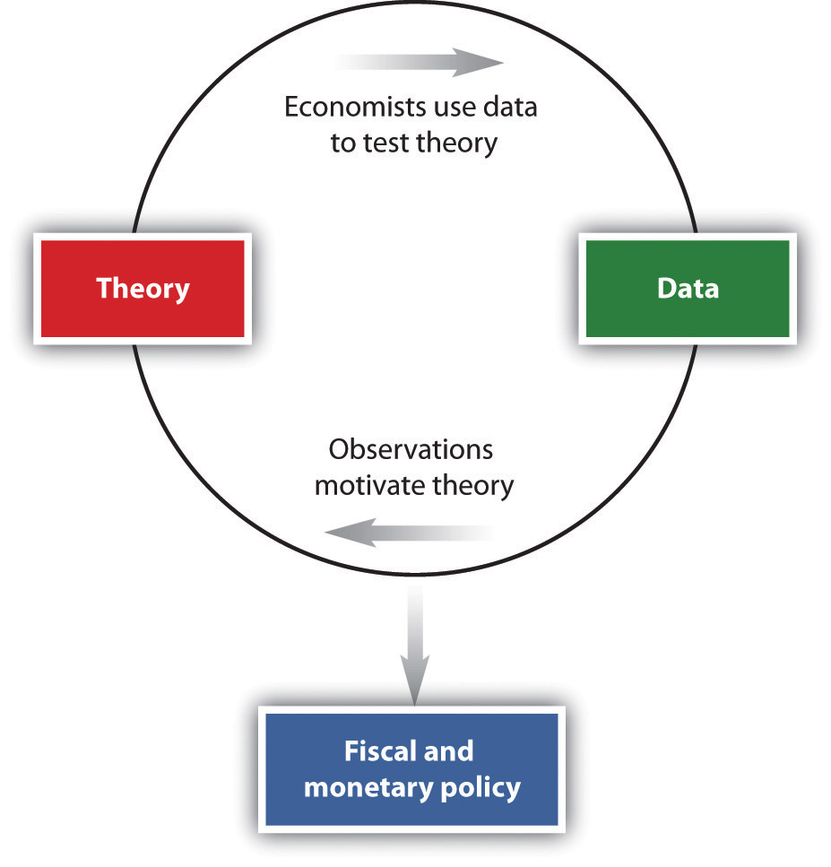

After you have read this section, you should be able to answer the following questions:
We have seen the news and policy in action. But there is a vital piece missing: given the economic news, how do policymakers know what to do? The answer to this question is at the heart of this book. The basic methodology of macroeconomics is displayed in Figure 3.5 "Macroeconomics Methodology". Macroeconomics involves the interplay of theory, data, and policy. We have already seen two of these components in Figure 3.1. Two screens highlighted data we have on the macroeconomy, and two screens highlighted policy actions.
Figure 3.5 Macroeconomics Methodology
The answer to the question “how do policymakers know what to do?” is on the top left of Figure 3.5 "Macroeconomics Methodology": theory. Macroeconomists typically begin by observing the world and then try to develop a theoretical framework to explain what they have seen. (An old joke says that the definition of an economist is “someone who sees something happen in practice and wonders whether on earth it is possible in theory.”) Usually, a theory developed by economists has a mathematical foundation—expressed by either equations or diagrams. There is even a bit of art here: the theoretical framework must be simple enough to work with yet realistic enough to be useful.
We hinted at these theories in our earlier discussion when we explained that both monetary policy and fiscal policy affect the economy by changing the willingness of households and firms to purchase goods and services. In our applications chapters, we develop these ideas and explain the frameworks that policymakers use when deciding on their policies.
Our frameworks—or models, as they are often called—are tested by their ability to match existing data and provide accurate predictions about new data. Models are constantly refined so that they can do a better job of matching facts. After many rounds of interaction between theory and data, a useful framework emerges. This then becomes the basis for policymaking.
How do policymakers know about the theories devised by economists? Politicians are typically not expert economists. In most countries, a large number of trained economists are employed as advisors to the government. These individuals have studied economic theory and are also familiar with economic statistics, allowing them to provide the link between the economic frameworks and the actual implementation of policy.
The big challenge for economists is to understand the links from policy to the aggregate economy. When you first learned to drive, you were presumably introduced to all the instruments in the car: the steering wheel, the accelerator, the brake, the mirrors, and so forth. At the same time, you were learning the rules of the road. For many, the instruments of the car are easy enough to grasp, and the rules of the road are reasonably intuitive. The difficulty (and this is why driving schools make money) is in making the connection between the controls in the car and the outcome you wish to achieve while driving. The same is true of economic modeling: policy tools are not very difficult to understand, yet it can take decades of experience to truly understand how to use these tools effectively.
Economists and businesspeople hope, for example, that the current chairman of the Federal Reserve, Ben Bernanke, has this understanding, as discussed in the following news article excerpt.
In terms of intellect, Ben S. Bernanke may be to the Federal Reserve what John G. Roberts Jr. is to the Supreme Court. And like Chief Justice Roberts, Mr. Bernanke, the nominee to replace Alan Greenspan at the Fed, has left a paper trail worth studying. What can it tell us about the sort of Fed chairman he would be?
In general, Mr. Bernanke’s work has been solidly in the mainstream—a mainstream he has helped define since he began publishing papers in major economic journals since 1981. He has written repeatedly about ways of using mathematical models of a dauntingly complex economy to set monetary policy. When he has strayed from that subject, his conclusions have sometimes raised eyebrows.
[…]
These topics, however, are not at the core of what Mr. Bernanke would be concerned with at the Fed. There, his opinions about domestic monetary policy would be more important. One tenet of Mr. Bernanke’s philosophy could not be clearer: that the central bank should use a model, not just hunches, to decide about interest rates and the money supply.
This is how he put it in 1997 in a paper with Michael Woodford, now a professor of political economy at Columbia: “We conclude that, although private-sector forecasts may contain information useful to the central bank, ultimately the monetary authorities must rely on an explicit structural model of the economy to guide their policy decisions.”
[…]Daniel Altman, “Economic View: Bernanke’s Models, and Their Limits,” New York Times, October 30, 2005, accessed June 27, 2011, http://www.nytimes.com/2005/10/30/business/yourmoney/30econview.html.